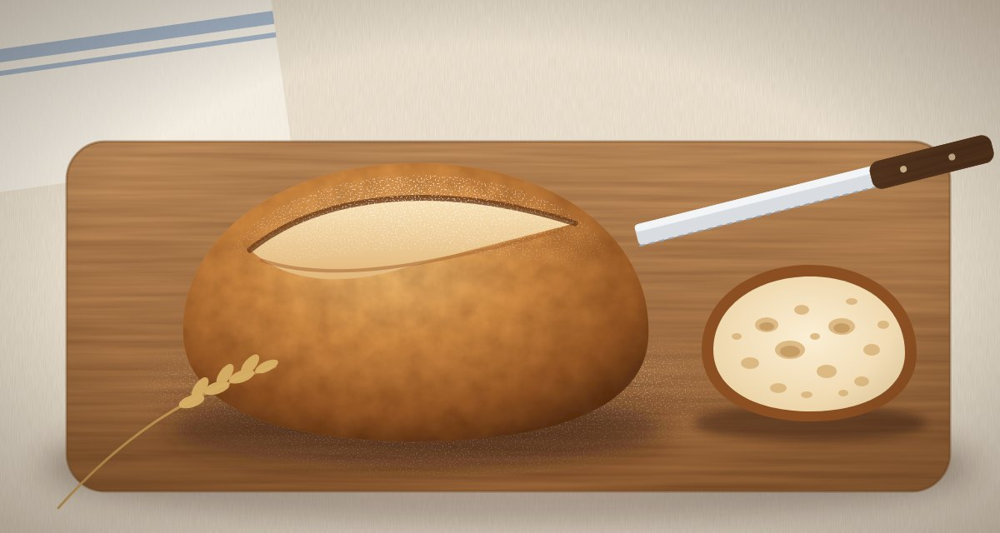

The no-knead sourdough that gave me my weekends back
Four ingredients, twenty minutes of actual work and a loaf with an ear you can hear crackle. This is the method I have baked every Saturday for three years.

For years I thought good bread needed strong arms and a free afternoon. I kneaded, I slapped dough onto the counter, I set timers for every fold. The loaves were fine. The weekends were gone.
Then a baker at our farmers market told me she had not kneaded a loaf in a decade. Time does the work, she said. Give the dough a long, cool rest and the gluten organises itself. I went home, mixed four ingredients in a bowl and walked away. The next morning I had the best bread I had ever made.
Why no-knead works
Kneading lines up gluten strands so the dough can trap gas. A long, slow rise does the same job on its own. As the flour sits in water, enzymes break proteins into shorter pieces that link up again into a stretchy network. Wild yeast in the starter fills that network with bubbles, and lactic bacteria add the tang.
All you add is patience: a few gentle folds in the first two hours, then a night in the fridge. The cold slows the yeast down, so the bacteria have time to build flavour, and a cold dough is far easier to shape and score.
What you need
A digital scale, a large bowl, a proofing basket or a bowl lined with a floured tea towel, and a heavy pot with a lid. The pot traps steam for the first twenty minutes of baking, which keeps the crust soft long enough for the loaf to spring up and the score to open into an ear.
No-knead sourdough
Ingredients
- 500 g bread flour
- 375 g water
- 100 g active starter
- 10 g fine salt
Method
- Mix the flour, water and starter until no dry flour is left. Cover and rest for 30 minutes.
- Add the salt with a splash of water and squeeze it through the dough with wet hands.
- Over the next two hours, stretch and fold the dough four times, every 30 minutes.
- Leave it covered until it has grown by half, about 4 to 6 hours at room temperature.
- Shape a tight round, put it seam side up in the floured basket and refrigerate overnight.
- Heat the pot in a 250 °C oven for 45 minutes. Turn the loaf out, score it and bake 20 minutes covered and 25 uncovered.
Questions bakers ask
Can I use whole wheat flour? Swap up to a third of the bread flour and add 20 g more water. Whole grains drink more and ferment faster, so check the dough an hour earlier.
Why is my loaf flat? Usually the dough rose too long before shaping, or the starter was past its peak. Shorten the rise next time and shape when the dough is domed and jiggly, not slack.
Comments (3)